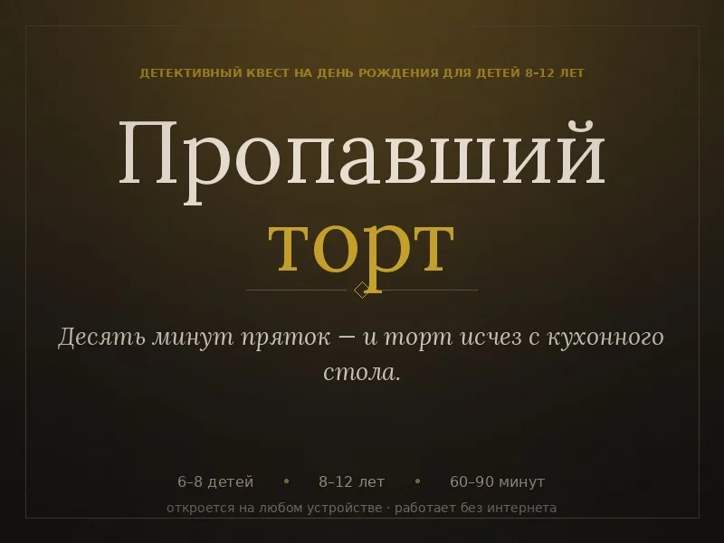

Детективный квест на день рождения ребёнка «Пропавший торт»
Мама испекла шоколадный торт — а пока дети играли в прятки, он исчез. Калитка закрыта, бабушка никого не видела. Значит, торт где-то на участке, а тот, кто его унёс, играет вместе с вами.
Один файл · работает без интернета · играть сколько угодно раз

Что внутри
Что вы получите
- 8 ролей для детей: характер, маленький секрет и рассказ, где прятался
- 12 улик в трёх раундах: следы на мокрой дорожке, лай собаки, крем на ручке гаража
- Готовый сценарий для взрослого ведущего
- Добрая развязка без злодеев
- Версия для печати
Как играть
Как провести
- Откройте файл, отметьте число детей.
- Каждый по очереди читает свою роль с телефона.
- Три раунда улик, голосование и развязка — по экрану.
- Совет: держите настоящий торт наготове к финалу.
Частые вопросы
Для какого возраста?
Для детей 8–12 лет, 6–8 игроков и один взрослый ведущий.
Где играть?
Дома, на даче, в кафе — нужен только телефон или распечатка.
Есть квест для взрослых?
Да: «Тихий юбилей» для взрослой компании.
Другие квесты и программы
Бесплатный мини-детектив онлайн «Дело о витрине» — играть за 3 минутыКороткий детектив онлайн: прочитайте показания, изучите улики и найдите вора за три минуты. Бесплатно, без рег…Детективный квест на корпоратив «Последний этаж» — сценарий для командыСценарий детективной игры на корпоратив для 6–8 человек: утечка письма с ноутбука генерального, расследование …Детективный квест для компании «Тихий юбилей» — сценарий на 6–8 человекГотовый детективный квест для компании 6–8 человек на 2 часа: роли, улики, сценарий ведущего в одном файле. Уб…Конструктор детективных квестов «Мастерская детектива» — бесплатно онлайнБесплатный конструктор детективного квеста в браузере: подозреваемые с секретами, улики по раундам, проверка л…Новогодний детективный квест «Тридцать первое» — игра на 6–8 человекДетективная игра на Новый год для 6–8 человек: три минуты темноты под бой курантов и пропавшее завещание. Роли…Новогодний квест для детей 8–12 лет «Мешок Деда Мороза» — готовый сценарийГотовый новогодний квест для детей 8–12 лет: 6–8 игроков, роли, 12 улик в трёх раундах, сценарий для взрослого…Бот-кликер для Battlesmiths — клиент для Windows, демо 3 дняБот-кликер для игры Battlesmiths с клиентом под Windows. Демо-режим 3 дня бесплатно, продление на любое число …Бот для Dungeon Crusher («Крушители Подземелий») — автобой, фарм, заданияБот-кликер для Dungeon Crusher: Soul Hunters — автобой, сбор ресурсов, ежедневные задания и управление энергие…Бот для Catacombs World (BlueStacks) — фарм на автоматеБот-кликер для фарма в Catacombs World, работает с эмулятором BlueStacks на ПК. Скачать в теме ВКонтакте, паро…